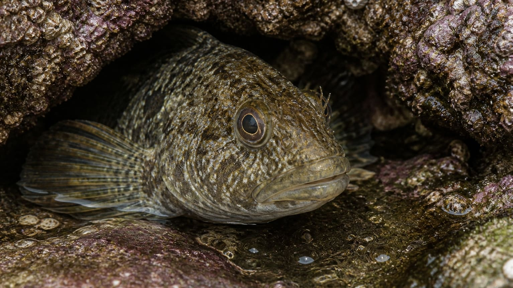
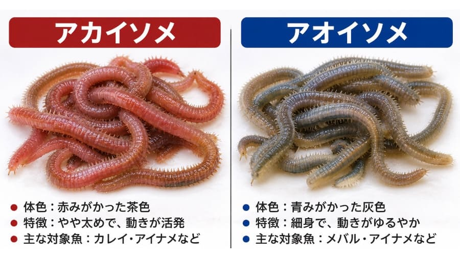
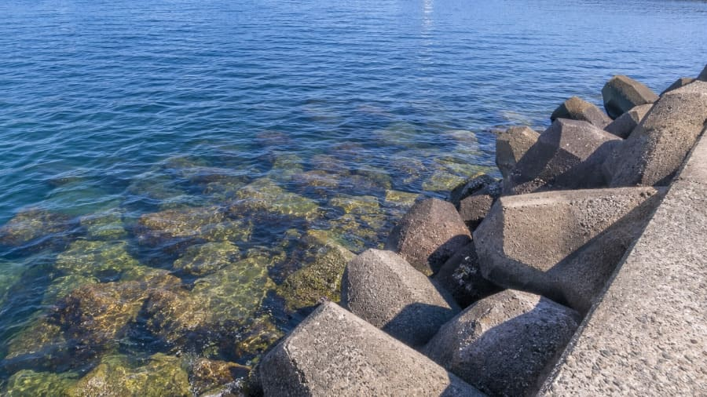

【アイナメの釣り方】ルアーより「生き餌」が圧倒的に強い！仕掛け・ポイント・クジメとの違いと別格の旨さを徹底解説

堤防の足元や磯、港湾部の岩礁帯から狙える根魚の代表格・アイナメ。大型になると50cmを超える個体も現れ、海底付近での強烈な突っ込みは一度味わうと忘れられない迫力があります。かつて大型個体が「ビール瓶サイズ」と呼ばれて釣り人の憧れを集めたのもうなずける存在です。近年はソフトルアーを使ったロックフィッシュゲームも人気ですが、現場で本気でアイナメを獲りに行くなら、結論はシンプルです。ルアーよりエサ釣り、それも「生き餌」を使うこと。人工のワームでは見切られて口を使わない状況でも、生きたイソメやカニを目の前に落とせば、アイナメの捕食スイッチは一気に入ります。
そしてもうひとつ、アイナメを語るうえで絶対に外せないのが「味の格」です。よく似た魚にクジメがいますが、食べてみれば差は歴然。アイナメの白身は、クジメとは比べものにならないほど別格に美味い魚です。この記事では、生き餌にこだわる実践的なエサ釣り攻略法から、ポイントの見極め、クジメとの確実な見分け方、そして絶品の食べ方までを一気に解説します。
1. なぜアイナメはルアーより「生き餌」なのか？
アイナメはワームでも釣れる魚ですが、堤防や岩礁帯で確実に釣果を出すなら生き餌を使ったエサ釣りが圧倒的に強いのが現実です。普段からイソガニやエビ、ゴカイ・イソメ類などの底生生物を待ち伏せて捕食しているため、生きたエサが放つ「自然な動き」と「匂い」に対して反応がまるで違うからです。
ロックフィッシュ用のワームは、広範囲を手返しよく探る点では確かに優秀です。しかし、アイナメは広範囲を泳ぎ回ってエサを追う魚ではなく、岩の隙間や海藻の陰に潜んで近くを通る獲物を待ち伏せるタイプです。プレッシャーのかかった身近な堤防や、食い気の落ちたタイミングでは、人工物であるワームを目の前に通しても簡単に見切られ、「生き餌じゃないと食いつかない」と感じる場面が実に多くあります。
その点、生きたエサなら無理に派手なアクションをつける必要がありません。仕掛けを底付近に落とし込み、生き餌本来のうごめきと匂いで誘うだけで、警戒心の強い良型にもしっかり口を使わせられます。
アイナメ狙いで用意すべき「最強の生き餌」

- イワイソメ（マムシ・アカイソメ）：アイナメ釣りにおける文句なしのベストエサ。身がしっかりしていてエサ持ちが良く、強い匂いで大型アイナメの食い気を強烈に刺激します。本命狙いの投げ釣りやブッコミでは、アオイソメより明らかに食いが良いのが特徴です。
- アオイソメ：最も手軽で汎用性が高い定番の生き餌。独特のうねる動きと匂いでアピールでき、足元の探り釣りから投げ釣りまで幅広くこなします。大型狙いなら複数匹を掛ける「房掛け」も効きます。
- イソガニ・モエビなどの甲殻類：アイナメが岩礁帯や堤防基礎石の隙間で普段から食べている主食そのもの。岩礁周りや堤防際をタイトに攻める場面で心強い切り札になります。
※サンマなどの魚の切り身やアサリのむき身も使えますが、まずは生命感とアピール力が段違いのイワイソメかアオイソメを用意するのが鉄則です。
釣果に直結する「生き餌の付け方」の極意
生き餌を使っていても、付け方が雑だとアイナメは途端に食わなくなります。最大の注意点は「エサを水中で回転させないこと」です。エサが不自然にクルクル回ると、アイナメは追うのをやめてしまいます。
- イソメ類：ハリの軸に対して、エサのど真ん中（センター）をまっすぐ通すように刺します。アオイソメは頭を取ってから、やわらかな胴の部分を通すと収まりが良くなります。
- エビ類：尾を取って、切り口からまっすぐハリを通します。
- アサリ：吸い口からワタへとハリ先を通します。
2. アイナメの生態と狙うべき時期・時間帯
アイナメは北海道から九州まで広く分布し、ごく浅場から水深30m付近までの岩礁帯・藻場・港湾部に生息する底生魚です。主なシーズンは秋から春先で、他の根魚と違って昼間でも十分に釣れる「昼行性」である点が大きな特徴となります。
| 項目 | 特徴・目安 |
|---|---|
| 分類 | アイナメ科の海水魚 |
| 分布・水深 | 北海道〜九州沿岸、水深1〜30m付近 |
| 主な生息環境 | 岩礁帯、藻場、砂礫底、堤防の捨て石・基礎石周り |
| 食性 | 甲殻類（カニ・エビ）、多毛類（ゴカイ・イソメ）、貝類、小魚 |
| 体長目安 | 25〜40cmが代表的（大型は50cm超、最大60cm） |
| 産卵期 | 秋から冬 |
季節ごとの狙い目と「昼行性」の強み
- 秋〜冬（10月〜2月頃）：産卵を意識した個体が浅場の岩礁帯や堤防周りに集まる絶好のシーズン。大型との遭遇率も高まります。
- 春（3月〜5月頃）：水温上昇とともに活性が上がり、岩礁周辺で活発にエサを追います。関東などでは冬から春先にかけて好釣果が期待できます。
- 夏（6月〜8月頃）：一般的には深場や障害物の奥を狙う時期ですが、千葉県・銚子周辺の防波堤のように6月から大型の釣期を迎えるエリアもあります。
カサゴやメバルは夜釣りのイメージが強いですが、アイナメは昼行性です。朝マヅメから日中にかけて視界が効く時間帯に、足元の障害物を一つずつ撃っていく釣りがバッチリ成立します。また、待ち伏せ型とはいえ潮が動くタイミングは外せません。潮が効き始めるとエサとなる甲殻類やイソメ類が動き出すため、捕食のチャンスが一気に高まります。
産卵期の「婚姻色オス」は資源保護も意識したい
秋から冬の産卵期になると、オスは岩の隙間や海藻の根元に産卵場所を確保し、メスが産み付けた卵を外敵から守り続けます。この時期のオスは体色が黄色や橙色、青みを帯びた鮮やかな婚姻色に変化し、縄張り意識が強くなるため仕掛けにも果敢にアタックしてきます。卵を守る大事な親魚であるため、婚姻色の出た大型オスが釣れたときは、未来の資源をつなぐためにもリリースを検討したいところです。
3. 釣果を分けるポイント選び｜何もない砂地は捨てて「障害物」を撃て

アイナメ攻略の鍵は「海底の地形と障害物を丁寧に探ること」に尽きます。変化のない砂地を漫然と狙うのではなく、身を隠せてエサが集まる以下の5つの一級ポイントを優先して攻めましょう。
- ① 堤防の壁際・基礎石（捨て石）周り：堤防の土台に積まれた石やブロックの隙間は、カニやエビの住処であり、アイナメにとって最高の待ち伏せ場所です。特に堤防の角や基礎石の切れ目は重点的に探ります。
- ② テトラポッド・消波ブロックの隙間：複雑な影と隙間にエサが集まる好ポイント。ただし足場が不安定で危険なため、無理にテトラへ乗らず、安全な足場から届く隙間や際を狙うのが鉄則です。
- ③ 岩礁帯・ゴロタ場と砂地の境目：自然の岩礁帯は王道ですが、全面が岩だと根掛かりが頻発します。狙い目は岩礁と砂地の境界ライン。根掛かりを抑えながら広範囲のアイナメを拾えます。
- ④ 海藻（藻場）の周辺：海藻の根元や茂みは多毛類や小型甲殻類が豊富なエサ場であり、産卵期の拠点にもなります。
- ⑤ 砂地に点在する「沈み根」：広大な砂地の中にポツンとある岩や隠れ根は、大型アイナメが陣取る隠れた一級ポイント。周りが砂地なので投げ釣りでも攻略しやすい場所です。
4. 生き餌で仕留める！ アイナメ攻略の王道3釣法
アイナメのエサ釣りは、足元をピンポイントで探る「ブラクリ」、複数のエサで探る「胴突き」、そして沖の沈み根や根の際を撃つ「投げ釣り（ブッコミ）」の3つを使い分ければ、あらゆる堤防・港湾を攻略できます。
① ブラクリ探り釣り（堤防の足元・テトラ・捨て石の王道）
オモリとハリが一体化した「ブラクリ」に生き餌を付け、足元の隙間へ落としていく最も手返しの良い釣り方です。
- タックル目安：ロッド 1.8〜2.7m（足場が高い堤防では磯竿・ヘチ竿・長めの竿も可）／小型スピニングリール／道糸 ナイロン2〜4号／ブラクリ 2〜6号（まずは3〜5号基準）／エサはアオイソメ・イワイソメ。
- オモリ形状の使い分け：市販の板状ブラクリはヒラヒラと落ちて食い気を誘いますが、狭いブロックの隙間では波にもまれて入れにくい場面があります。狭い穴を垂直に落としたいときはナツメ型オモリを使った仕掛けに分があります。
- 実践アクションとアワセ：アイナメは上から落ちてくるエサに敏感で、ブラクリが着底する寸前にアタリが出ることも多いです。着底したら底から浮かせすぎない範囲で軽く竿をあおり、再びゆらゆら落とす動作を繰り返します。反応がなければ数メートルずつテンポよく移動しましょう。コツコツとアタリが出たら即アワセはせず、ひと呼吸おいてエサをくわえさせてから竿を大きく立てて一気に底から引き剥がすのがコツです。
② 胴突き仕掛けの探り釣り（底から少し上まで立体的に探る）
2本針などの胴突き仕掛けを使えば、海底スレスレから少し上のレンジまで複数の生き餌でアピールできます。
- タックル目安：ロッド 2〜3m／小型スピニングリール／道糸 ナイロン3号前後／胴突き2本針／オモリ 5〜15号／エサはアオイソメ・イワイソメ。
- 攻略のコツ：足元の基礎石周りや壁際に落とし、竿先でゆっくり上下させて誘います。根掛かりが激しい場所では針数を減らして手返しを優先しましょう。
③ 投げ釣り・チョイ投げ（沈み根・根の際・消波ブロック沖の大型狙い）
少し沖にある沈み根や、岩礁帯と砂地の切れ目、消波ブロックの沖側を狙うなら投げ釣り・チョイ投げが威力を発揮します。遠投すること自体が目的ではありません。近距離・中距離・遠距離と刻みながら魚が潜む根を探し出すのがキモです。
- 小名浜港スタイル（港内の沈み根狙い）：投げ専用竿に中型スピニング、PE 1.2〜2号、中通しのカメ型オモリ＋ハリス1〜2号。沈み根の中や砂地との境目に止めて待ち、気配がなければ竿をあおってオモリを浮かし、手前のポイントへずらして探ります。
- 銚子防波堤スタイル（消波ブロック周りの大型狙い）：3.8〜4.2mの投げ竿にナイロン5〜6号、六角オモリ10〜20号の遊動2本バリ（ブッコミ）仕掛けに、イワイソメの一匹掛けやアオイソメの房掛けをセット。遊動仕掛けはオモリが動かずアイナメに違和感を与えにくいため、食い込みが抜群に良くなります。
- 取り込みの鉄則：投げ釣り・ブッコミで大型が掛かると、アイナメはすかさず根やブロックへ逃げ込もうとします。アタリが出たら躊躇せず大きくアワセ、強引なほど一気に根から引き離して巻き上げるのが勝負の分かれ目です。根掛かりによるロストを前提に、予備仕掛けは多めに持参しておきましょう。
※なお、ソフトルアー（2〜4インチのワーム＋ジグヘッドやテキサスリグ等）で狙うロックフィッシュゲームも存在しますが、まずは生き餌でアイナメの着き場とアタリの出方を体で覚えるのが一番の近道です。
5. 「ビール瓶サイズ（ポン級）」と呼ばれた大型アイナメのロマン
アイナメ釣りには、他の魚ではまず聞かない独特の大型呼称があります。それが「ビール瓶サイズ」や「ポン級」という呼び名です。
昔ながらの投げ釣り師たちは、40cm〜50cmを超える極太の大型アイナメを立派なビール瓶に見立て、瓶を「1本、2本」と数えることから「ポン級」と呼ぶようになったとされています。
| サイズ目安 | 呼び方の目安 |
|---|---|
| 20cm前後 | 小型 |
| 30cm前後 | 良型 |
| 35cm前後 | ポン級と呼ぶ場合もある |
| 40cm以上 | ビール瓶サイズ・ポン級 |
| 50cm以上 | 大型・特大級（50cm超をビール瓶と呼ぶことも） |
※呼び方の基準には地域や釣り人による差があります。
大型化したアイナメは体高が出て胴回りがぶっとく張り出し、頭も大きく、見た目の迫力が小型とはまるで別物になります。掛けた瞬間の重量感と、海底の根へ突っ込む強烈なパワーは、まさに堤防・磯から味わえる最高峰のファイトです。
6. そっくりな「クジメ」との見分け方｜体色ではなく「側線」と「尾びれ」を見ろ
アイナメを狙っていると、同じアイナメ科のそっくりな魚「クジメ」が混じることがあります。どちらも生息環境や模様が似ており、体色には個体差があるため色だけで判断するのはNGです。確実に判別するには、次の2点を見れば一発で分かります。
- 側線の数（最も確実）：体の側面を走る感覚器官の線（側線）が、アイナメは5本、クジメは1本しかありません。
- 尾びれの形（パッと見で分かりやすい）：尾びれの後ろのフチが、アイナメはまっすぐ直線的なのに対し、クジメは丸みを帯びています。
| 比較項目 | アイナメ | クジメ |
|---|---|---|
| 側線の数 | 5本 | 1本 |
| 尾びれの形 | 後縁がまっすぐ（直線的） | 後縁が丸い |
| 大きさの目安 | 30〜40cm以上（50cm超も） | 20〜25cm程度と小型 |
| 生息場所 | 岩礁帯・砂礫底・港湾部など | 浅場の岩礁・藻場など |
7. アイナメは別格に美味い！ クジメとは格が違う極上の白身とおすすめ料理
見た目こそ瓜二つなアイナメとクジメですが、食卓に並べたときの旨さはまさに別世界です。クジメは大きくても20〜25cm程度にとどまる小型魚で、どうしても身が薄く小骨も気になりやすい魚です。一方、アイナメは30〜40cm超の堂々たるサイズに育ち、透明感のある美しい白身に適度な脂と上品な甘味・旨味がぎっしり詰まっています。同じ根魚・同じアイナメ科でありながら、「これぞ別格の高級白身魚」と唸らされるポテンシャルこそ、釣り人がアイナメに惚れ込む最大の理由です。
アイナメの実力を引き出す4大料理
- 刺身・薄造り（王道の極み）：鮮度の良い良型アイナメを釣ったら、まず絶対に味わいたいのが刺身です。透明感のある白身はほどよい弾力があり、噛むほどに上品な脂と甘味が広がります。少し薄造りにすると歯ごたえと旨味のバランスが際立ち、大型個体なら贅沢なほどたっぷり取れます。
- 煮付け（身もアラも絶品）：熱を通すと身がふっくら柔らかくほどけ、煮汁の旨味をしっかり吸い込んで格別の味わいになります。特に頭やカマなどの骨周りは濃厚な旨味が詰まっているので、捨てずに丸ごと煮付けるのがおすすめです。
- 塩焼き（直球の脂の旨味）：余計な味付けをせず、皮目を香ばしく焼き上げるだけで極上の一品になります。皮と身の間に乗った上品な脂の香ばしさは、白身魚の中でも頭一つ抜けています。
- 唐揚げ（小型サイズに最適）：小型の個体が釣れたときは、食べやすく切り分けて片栗粉をまぶし、カリッと唐揚げにするのが絶品です。骨が気になる場合は三枚おろしにしてから揚げると食べやすくなります。
※旬は地域によって異なり、関東などでは秋から冬（特に冬）が美味しいとされる一方、北海道では5〜7月を旬とする資料もあります。
刺身で食べる際の注意点（アニサキス対策）
アイナメも海産魚である以上、生食時はアニサキスなどの寄生虫対策を徹底しましょう。
- 釣ったら速やかに冷やし、できるだけ早く内臓を取り除く。
- 刺身にする際は身を目視でよく確認する。
- 心配な場合は、マイナス20℃で24時間以上の冷凍、または中心温度60℃で1分以上の加熱を行う（酢や醤油、ワサビでは死滅しません）。
8. 生き餌で誘い、極上の白身を味わう――それがアイナメ釣りの醍醐味
アイナメは、身近な堤防の足元から「ビール瓶サイズ」と呼ばれる大型まで狙える、実に奥深くロマンあふれるターゲットです。
最新のルアーで手返しよく探る楽しさもありますが、この魚の本質に向き合うなら、やはりイワイソメやアオイソメ、カニといった「生き餌」をハリにまっすぐ刺し、海底の障害物を一つずつ丁寧に撃っていく昔ながらのエサ釣りに勝るものはありません。着底寸前の鋭いアタリを捉え、根に潜ろうとする強烈な引きを強引に引き剥がした先には、クジメとは別格の極上白身が待っています。
産卵期に卵を守る婚姻色の大型オスへの配慮も忘れずに、次の釣行ではぜひ生き餌を携えて、堤防の足元や沈み根に潜む極上のアイナメを狙ってみてください。
📍 関東のアイナメ・クジメ生息・釣果スポット
※マップ上の赤いドットが釣れるポイントです。